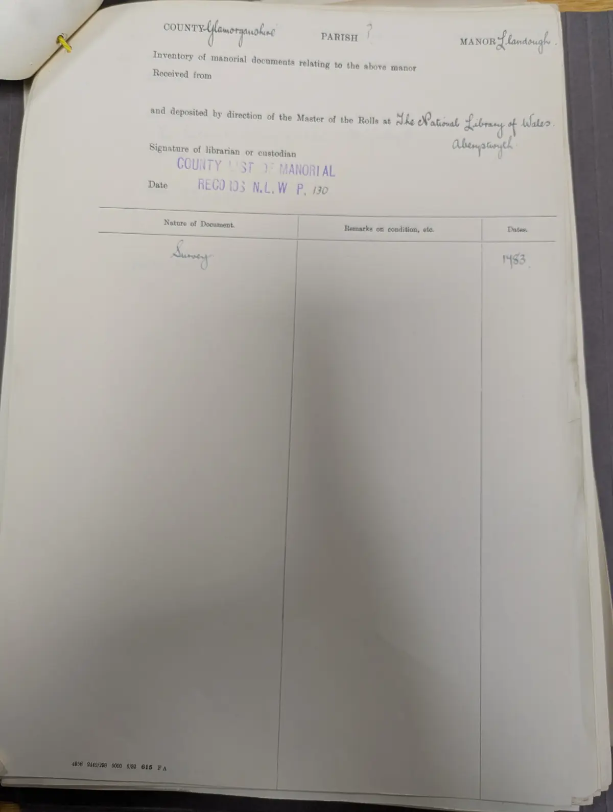

GHF-E106-R34-A1 partial
Manorial Documents Register: HMC 9.311 Llandough manor return

Transcript
COUNTY Hlaworgaudhin PA RISH MA Nor +f landoug Y Inventory of manorial documents relating to the above manor Received from y J t Dis all tladen and deposited by direction of the Master of the Rolls at lhe Nakional, fsbrany a) Wale : A | p ; VALE p15 fans ! Signature of librarian or custodian ene Dates. Nature of Document. Remarks on condition, ete. 4 i z ee ee
Artifact description
The records team shares the original 1920s manorial return, states it adds little detail, and suggests National Library of Wales catalogues for further research.
| Catalogue ID | GHF-E106-R34-A1 |
|---|---|
| What it is | Image from The National Archives. Attached to an email received on 26 February 2026, their reference HMC 9/311. 1 page. |
| From | The National Archives |
| Email received | 26 February 2026 |
| Their reference | HMC 9/311 |
| Pages | 1 |
| File | HMC 9.311 Llandough Manor return.jpg (1779 KB) |
| State | Read |
Our integration
Part of the preservation notice thread with The National Archives opened 10 February 2026. The thread's standing classification is “partial”. Statutory time: no statutory deadline.
Concern to test: whether this reply answers the question as asked, or a narrower one. Not checked against the original request wording here.
What cuts against the case: the body disclosed material, which is the opposite of a refusal; what it disclosed is shown here as sent.
Working-theory relevance · 29 October 2026: The Manorial Documents Register entry is a provenance and historical-context lead: it may identify a manorial record series and its custodian or classification. It can guide research into the historical estate, but it does not by itself establish that a modern freehold parcel belonged to the manor, transferred to the Williams family, or became Parcel A. Modern title still requires the operative instruments and plans. Theory and test schedule.
Related: The covering email · What They Don’t Say: WTDS-a5b94624-1 · EV-0442 in the evidence catalogue · Timeline · Disclosure Dartboard